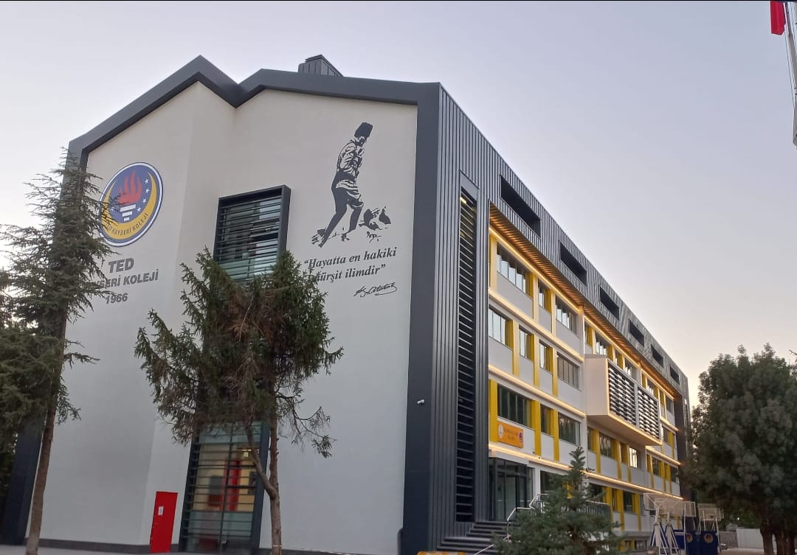

TED HİGH SCHOOL

The aims and duties of secondary education at TED Kayseri College High School are in accordance with the general objectives and basic principles of Turkish National Education; (1) To ensure and protect social and cultural integration in line with Atatürk's nationalism, (2) By giving all students a minimum common general culture at secondary education level, to give them the awareness and power to recognize personal and social problems, to seek solutions to them, and to contribute to the economic, social and cultural development of the society, (3) To prepare students for higher education or both for profession and higher education or for social life and business by developing them according to their interests and abilities within the framework of various programs that take into account the requirements of the community economy.